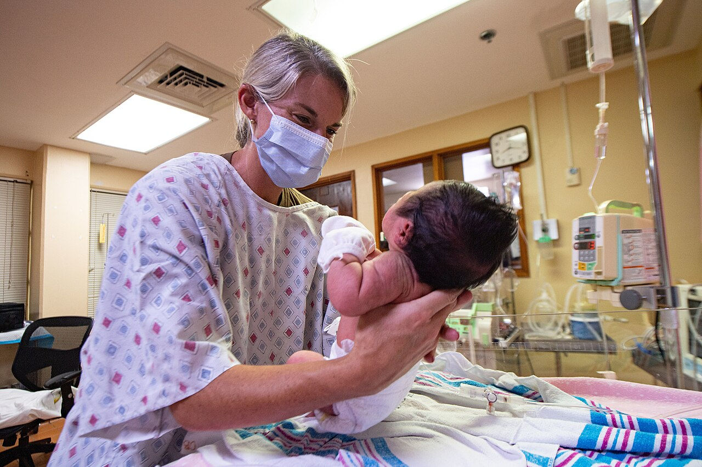
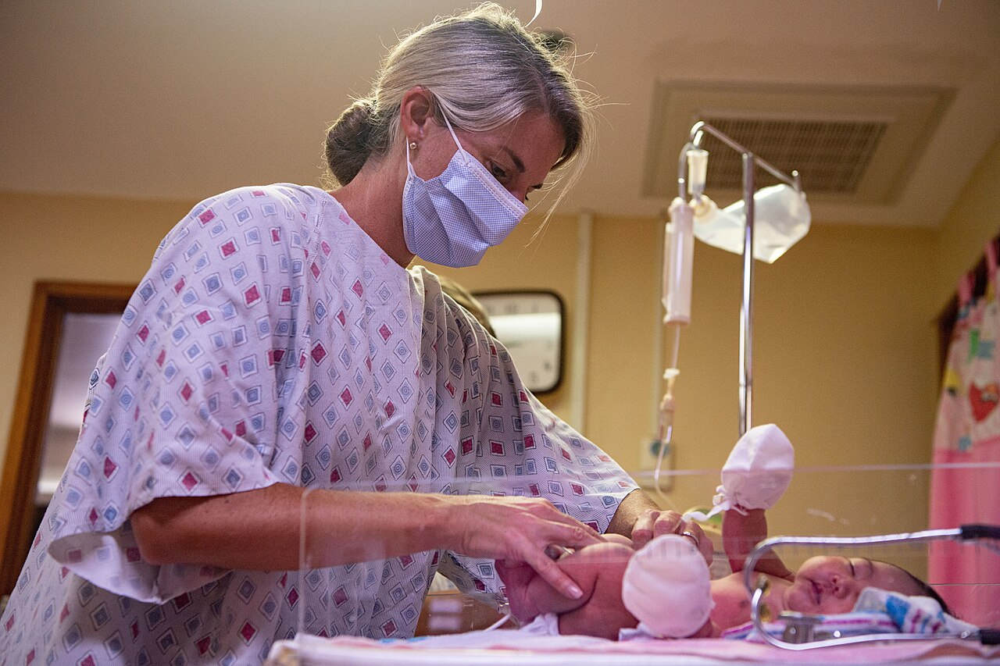
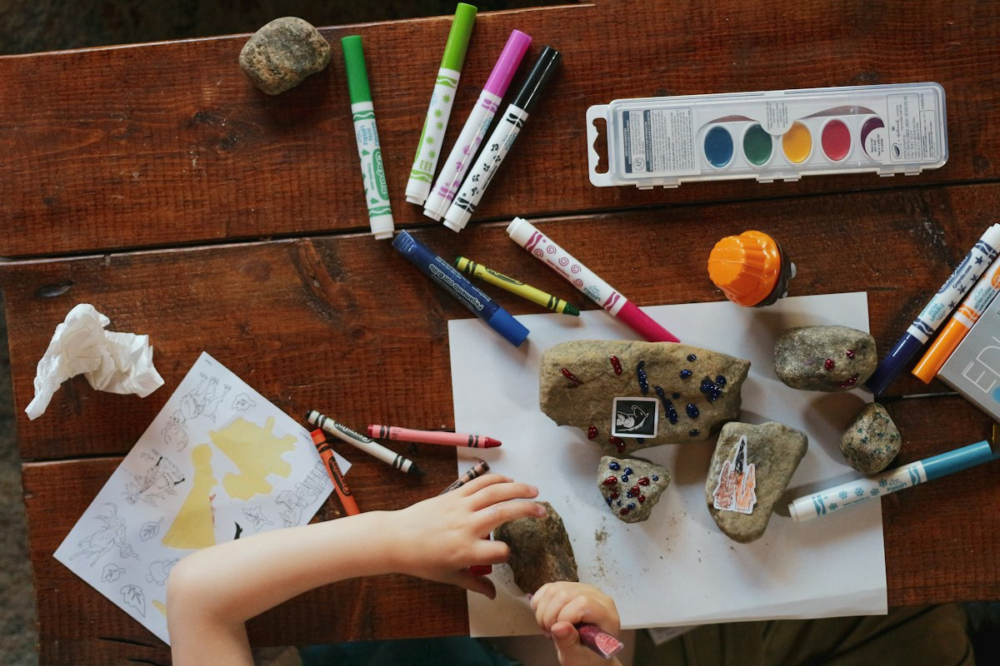

Nơi Yêu Thương Đồng Hành Cùng
Sự Phát Triển Khỏe Mạnh Của Bé
PETIT CARE mang đến không gian phòng khám thân thiện không mùi thuốc, vắc-xin bảo quản dây chuyền lạnh chuẩn GSP và đội ngũ bác sĩ chuyên khoa Nhi đầu ngành giàu thấu cảm, giúp ba mẹ hoàn toàn an tâm trong từng cột mốc khôn lớn của con.

Không Gian Thân Thiện Trẻ Em
Phòng khám đầy ắp đồ chơi, bé không sợ tiêm!
Lịch Tiêm Chủng Tự Động Theo Tháng Tuổi
Chọn độ tuổi của bé để xem phác đồ mũi tiêm cần thiết, xuất xứ vắc-xin và giá niêm yết minh bạch.
Kiểm Tra Chiều Cao & Cân Nặng Chuẩn WHO
Nhập chỉ số của bé để so sánh với đường cong phát triển tiêu chuẩn của Tổ chức Y tế Thế giới (WHO). Bác sĩ Petit Care sẽ đưa ra lời khuyên dinh dưỡng ngay lập tức!
Các Chuyên Khoa Mũi Nhọn Tại Petit Care
Đồng hành cùng bé từ giai đoạn sơ sinh nhũ nhi cho đến tuổi học đường với hệ sinh thái y tế toàn diện.

Khám Sơ Sinh & Nhi Tổng Quát
Khám và điều trị các bệnh lý hô hấp, tiêu hóa, tai mũi họng, sốt phát ban và sàng lọc dị tật bẩm sinh sơ sinh với quy trình nhẹ nhàng, không gây đau.
Xem chi tiết gói khám →Trung Tâm Tiêm Chủng Quốc Tế
Hệ thống bảo quản vắc-xin âm sâu đạt chuẩn GSP. Khám sàng lọc trước tiêm kỹ càng, kỹ thuật tiêm êm giảm đau tối đa và theo dõi phản ứng sau tiêm 30 phút.
Xem bảng giá vắc-xin →
Tư Vấn Dinh Dưỡng & Biếng Ăn
Phác đồ dinh dưỡng cá thể hóa cho trẻ biếng ăn, chậm tăng cân, còi xương hoặc béo phì. Hướng dẫn thực đơn ăn dặm khoa học cho mẹ theo từng giai đoạn.
Xem gói dinh dưỡng →Tâm Vận Động & Ngôn Ngữ Sớm
Đánh giá các mốc phát triển lẫy, ngồi, bò, đi và giao tiếp ngôn ngữ. Phát hiện sớm và can thiệp kịp thời các dấu hiệu chậm nói hoặc rối loạn phổ tự kỷ.
Xem can thiệp sớm →Đội Ngũ Bác Sĩ Nhi Khoa Giàu Kinh Nghiệm
Những người thầy thuốc tận tâm, giàu tình yêu thương trẻ thơ và luôn sẵn sàng lắng nghe mọi băn khoăn của cha mẹ.
TS. BS. Trần Hoàng Yến
Hơn 16 năm kinh nghiệm điều trị tại Bệnh viện Nhi Đồng 1. Tu nghiệp chuyên sâu về Hồi sức cấp cứu sơ sinh và Dị ứng thức ăn tại Đại học Y khoa Paris Descartes (Pháp).
ThS. BS. Lê Minh Quân
Nguyên Bác sĩ điều trị Khoa Hô hấp Bệnh viện Nhi Đồng TP.HCM. Bác sĩ được hàng ngàn ba mẹ yêu mến nhờ phong cách khám nhẹ nhàng, không lạm dụng kháng sinh.